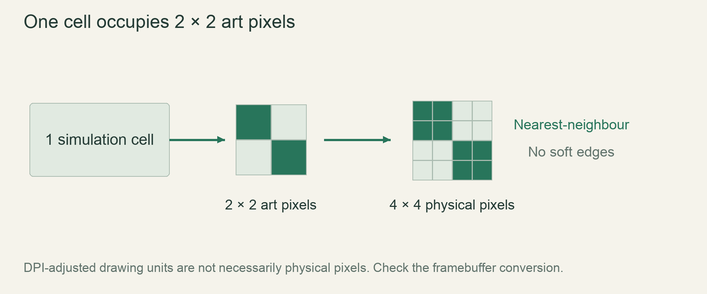

M5 / The vertical sliceLesson 81 of 100 · ~6 min reading + build time
Render through an art-pixel buffer
Display an art-pixel image with nearest filtering while preserving four physical pixels per simulation cell.
Previously: Close the procedural-world milestone. Keep that working result available before starting this lesson.
Why we need this now
The first window drew four logical units per cell at low DPI. A Retina window can map those units to more physical pixels. The finished art style fixes the physical grain, so the renderer must explicitly connect simulation cells, art pixels and display pixels.
Your result: Display an art-pixel image with nearest filtering while preserving four physical pixels per simulation cell.

01Derive the three coordinate spaces
One cell occupies two art pixels across. One art pixel occupies two physical display pixels across. Therefore a cell is four physical pixels wide. These multipliers describe units, not zoom preferences. A larger framebuffer should show more cells rather than magnifying the same cell array.
macroquad screen_width and screen_height are DPI-adjusted drawing dimensions. Multiplying by screen_dpi_scale recovers the corresponding physical extent. Perform budget and integer-pixel calculations in physical units, then convert destination coordinates back into drawing units when calling the API.
02Render details at the art resolution
A one-art-pixel crest rim is half a simulation cell high. Rendering one colour pixel per cell cannot express it. Build an art image with two-by-two art pixels per cell, draw the flat material fill, then place the rim inside the occupied top surface. Upload that image to a texture.
Set nearest filtering explicitly. Linear filtering blends neighbouring colours during presentation, softening hard silhouette edges. Nearest presentation preserves the chosen art values; fractional destination alignment can still create uneven pixel widths, so align the physical viewport and round dimensions as the design specifies.
03Separate the experiment from the production viewport
The complete example draws a 160 by 90 art image at exactly two physical pixels per art pixel. It centres that small image in the window so the unit conversion is easy to inspect. It does not claim to fill the final game viewport.
In the production path choose an art target from the budget-capped physical view rectangle. Its width/height are half that rectangle. Keep the border panel outside the world. Rebuild images/textures when the required size changes, not each frame. Update pixel content through the existing texture rather than repeatedly allocating GPU resources.
04Verify output with measurement, not appearance alone
A crisp-looking image can still use the wrong physical scale. Test low-DPI and high-DPI windows, then inspect a known two-art-pixel cell footprint in a captured framebuffer or reliable pixel measurement. Also verify mouse conversion against the centred physical rectangle.
Record odd-size behavior and platform DPI reporting. A UI text scale may change independently, but that must not silently change the world’s cell footprint. The experiment uses a static image to isolate rendering; integrate simulation uploads only after this unit contract is verified.
Read → predict → run → change
Walk through the working example
Complete focused experiment — save as examples/lesson_081.rs, then run cargo run --example lesson_081 from game/.
Download this worked example ↧
use macroquad::prelude::*;
fn conf()->Conf { Conf {window_title:"Art pixels".into(),high_dpi:true,
window_width:800,window_height:500,sample_count:1,..Default::default()} }
#[macroquad::main(conf)]
async fn main() {
let mut image=Image::gen_image_color(160,90,Color::from_rgba(15,26,51,255));
for y in 60..90 { for x in 0..160 {
image.set_pixel(x,y,Color::from_rgba(29,48,80,255));
}}
image.set_pixel(80,58,Color::from_rgba(226,182,121,255));
image.set_pixel(81,58,Color::from_rgba(226,182,121,255));
image.set_pixel(80,59,Color::from_rgba(226,182,121,255));
image.set_pixel(81,59,Color::from_rgba(226,182,121,255));
let texture=Texture2D::from_image(&image);
texture.set_filter(FilterMode::Nearest);
loop {
clear_background(BLACK);
let dpi=screen_dpi_scale();
let physical_w=(screen_width()*dpi).round();
let physical_h=(screen_height()*dpi).round();
let x=((physical_w-320.0)/2.0).floor()/dpi;
let y=((physical_h-180.0)/2.0).floor()/dpi;
draw_texture_ex(&texture,x,y,WHITE,DrawTextureParams {
dest_size:Some(vec2(320.0/dpi,180.0/dpi)),..Default::default()
});
next_frame().await;
}
}Read what each part does
- The sand patch is exactly two-by-two art pixels, representing one simulation cell.
- Destination size is 320 by 180 physical pixels, divided by DPI for the drawing API.
- This static teaching texture avoids per-frame allocation; the live renderer updates an existing texture/image.
Expected result
A small crisp image centred in the window; the sand cell measures four-by-four physical pixels on supported DPI configurations.Exact version numbers, paths and compiler wording may differ. Compare the behavior and file locations, not incidental output formatting.
Prediction · repair · transfer
Exercises you actually do
Write a prediction or make an attempt before opening a solution. Use the hint if stuck; then compare reasoning and verify with the stated check. A different implementation is fine when it satisfies the same contract.
Calculate a Retina size
DPI scale is 2. What logical drawing width presents one four-physical-pixel cell?
Need a hint?
Divide physical units by the drawing scale.
Worked solution
Two logical drawing units correspond to four physical pixels at scale 2. An art pixel occupies one logical unit in this case.
How to verify your result
A captured known cell has a four-pixel physical footprint.
Break filtering deliberately
Switch Nearest to Linear and compare a magnified edge.
Need a hint?
Inspect blended colours around the silhouette.
Worked solution
Linear presentation introduces interpolated colours at scaling boundaries. Restore Nearest, integer physical alignment and exact dimensions for the game look.
How to verify your result
The restored edge has no interpolated colour fringe.
Avoid resource churn
Why should Texture2D::from_image not run every frame for a stable-size target?
Need a hint?
Separate resource allocation from content update.
Worked solution
Allocate once and update its contents as needed. Reallocate only when dimensions or graphics resources require it; repeated allocation creates avoidable CPU/GPU work.
How to verify your result
A frame profile shows no steady-state texture recreation.
When it goes wrong
Start with the observed symptom. Change one assumption at a time instead of pasting fixes until the error disappears.
Cells become eight physical pixels on Retina
What is happening: Logical units were mistaken for physical pixels.
Try this: Use screen_dpi_scale and convert the physical destination to drawing units.
Edges are blurry
What is happening: Texture uses linear filtering or fractional presentation.
Try this: Use nearest filtering and align the physical rectangle.
GPU work spikes during every redraw
What is happening: Textures are recreated inside the loop.
Try this: Retain resources and update data, reallocating only on size/resource changes.
Explain it without the example
Why not render every simulation cell directly as a single art pixel?
Reasoning to compare
The design gives each cell two-by-two art pixels. Collapsing that loses the smaller rim and silhouette detail allowed inside a cell.
Self-check only: test a prediction or ask your tutor if anything still feels arbitrary.
For your YouTube series
Turn the lesson into an episode
Open with the problem or result
A Retina display doubles your pixels unless you distinguish drawing units from physical pixels.
Teach in this order
- Count cell/art/physical units
- Show low-DPI versus Retina mapping
- Upload a tiny static buffer
- Present with nearest filtering
- Measure a single cell footprint
Record this demonstration
Show a labelled two-by-two art cell expanding to four-by-four physical pixels.
Close with what the viewer can now explain
DPI conversion belongs at the rendering boundary; simulation cell size stays fixed.
A lesson can span several recordings. The episode beats are a teaching outline, not a claim that every viewer learns at the same speed.
Finish with evidence
Cells remain four physical pixels wide and silhouette edges stay hard. No filtered blur or hidden resampling changes the grain.
Make one small variation without copying: predict it, run it and explain any difference. On another day, repeat one exercise from memory before starting the next lesson. Ask your tutor about any step you can execute but cannot explain.
This is an attempt marker, not a grade. Learning records are written only after demonstrated understanding.
Primary sources for this lesson
Use sources to verify the mechanism. The lesson itself supplies the instructions; the links are not a substitute for teaching them.